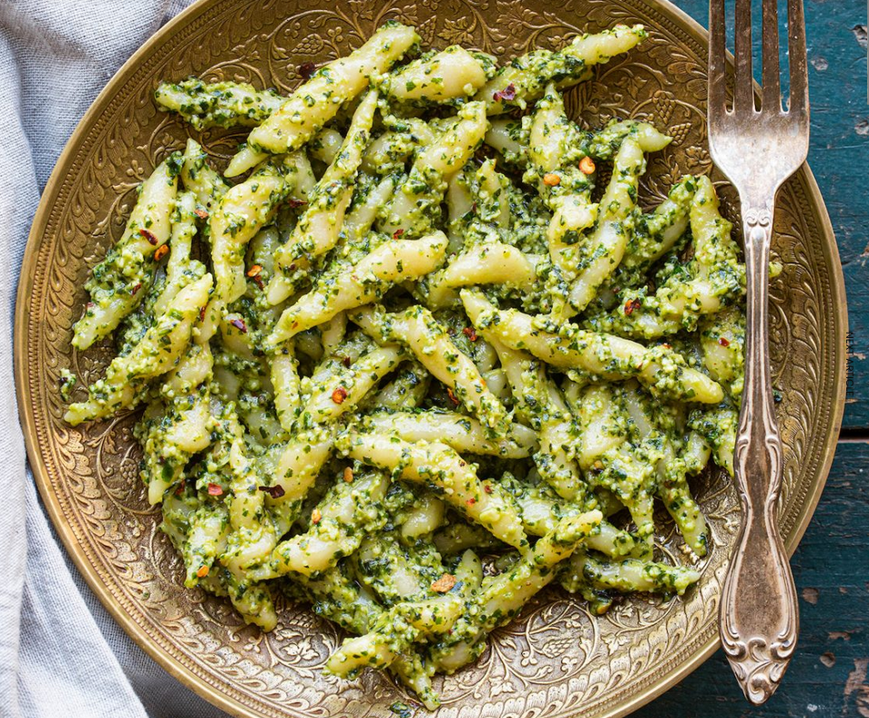

Description

Basil pesto is truly one of the wonders of the world. Simple yet
flavorful, this Italian classic brings out the beautiful flavor of basil
and garlic. Pine nuts and parmesan cheese add a rich nuttiness that
perfectly constants the kick of heat from the red pepper flakes.
Altogether, it is a bright, colorful, and flavor-packed sauce that fits
excellently into the grooves of Handmade Trofie pasta. Both the handmade
pasta and sauce can be whipped up from scratch in under an hour. A boujee
homemade Italian dinner in less than 60 minutes?! YES SIR/MA’AM!
Ingridients
- 1 recipe handmade Trofie pasta
- 2 cups packed fresh basil leaves
- 2 cloves garlic
- 1/4 cup pine nuts
- 1/2 cup extra-virgin olive oil, divided
- Kosher salt, to taste
- Freshly ground black pepper, to taste
- Red pepper flakes, to taste
- ¼ cup freshly grated parmesan cheese
Steps
-
Bring a large pot of salted water to a boil. Add in the handmade
Trofie pasta and cook to al dente, about 4-5 minutes.
-
Meanwhile, pulse the basil, garlic, pine nuts, and parmesan cheese in
a food processor until coarsely chopped. Add in the olive oil and
process until fully incorporated and smooth. Taste then season with
salt, pepper, and red pepper flakes.
-
Once cooked, drain the pasta and place it in a large bowl. Pour the
pesto over the cooked pasta and stir to fully combine. Serve hot or
cold.